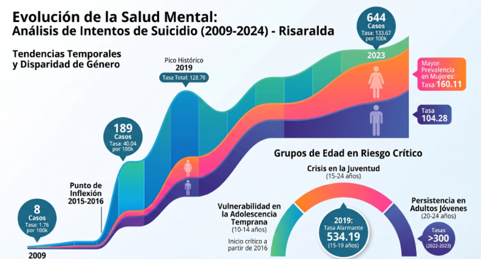

Lo que hay detrás de Luz
Todo el proyecto se apoya en datos públicos de Risaralda y en la revisión de asistentes conversacionales.
Contexto Regional
Desarrollado específicamente como respuesta territorial para Pereira y los municipios cercanos, áreas que registran tasas de suicidio por encima del promedio nacional.

Estado del Arte
Análisis comparativo e investigación global de iniciativas tecnológicas en salud mental, privacidad e IA conversacional para la contención en crisis.
Abrir o descargar el PDF